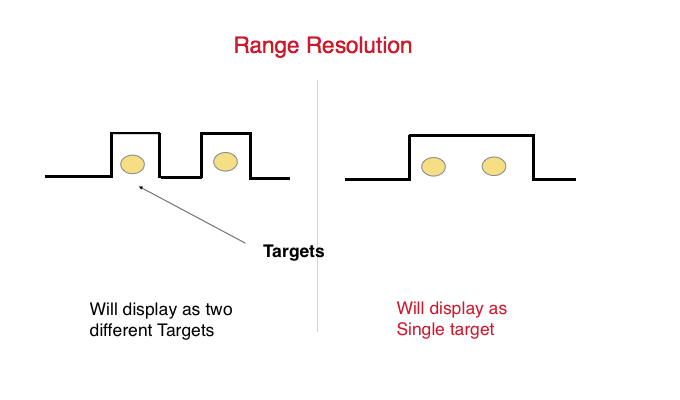

Sensores Remotos
Prof. Edier Aristizábal

Intro al curso
Objetivos y alcances del curso
En los últimos años, los satélites de observación de la Tierra han generado grandes cantidades de datos geoespaciales que están disponibles gratuitamente en plataformas web.
Este curso de Sensores Remotos está orientado para estudiantes de geociencias con el objeto de aprender a utilizar estas herramientas de teledetección en geología. El curso comprende la teoría general de sensores remotos y procesamiento de imágenes de satélite utilizando dos plataformas: Google Earth Engine (GEE) y openEO.
El procesamiento de imágenes es una herramienta ampliamente utilizada actualmente, adquirir estas herramientas seguramente le ampliará sus perspectivas profesionales en el campo de las geociencas aplicada en ingeniería.
Recomendación
Para tomar el curso se recomienda al estudiante tener conocimientos básicos en SIG, geología, geomorfología, y geología estructural. De esta forma el estudiante podrá sacar el máximo beneficio del contenido del curso.
En cualquier caso se recomienda que revise su carga académica para este semestre, y tome una decisión responsable si tiene el tiempo suficiente para dedicarle a este curso. Seguramente otro año lo podría tomar. Por que en caso contrario tiene altas posibilidades de perder el curso
Este curso es muy fácil de ganar. . . pero hay que trabajar mucho.
Definición
Sensores remotos
Los sensores remotos (teledetección) es el arte, ciencia y tecnología de observar un objeto, escena o fenómeno por técnicas basadas en instrumentos. El término remoto se refiere a la observación realizada a una distancia sin contacto físico con el objeto de interés. Se puede utilizar herramientas de detección y despliegue en tiempo real o una herramienta que registra la energía, la cual es emitida o reflejada desde el objeto o la escena en observación. La energía puede ser luz u otra forma de radiaciones electromagnética, campos de fuerza o energía acústica.


Historia
Antes de 1900
- Invento de la fotografía en 1826 Nicephore Niepce, William Henry Fox Talbot, Louis Jacques Mande Daguerre

Primera fotografía de un ser humano

- Primera F. aérea en 1858 sobre Paris (Val de Bievre) desde aprox. 400 m en globo (Gaspard-felix Tournachon Nadar)


- Algunas de las fotografías más notables tomadas con cámaras suspendidas de cometas fueron obra de George R. Lawrence. Se tituló San Francisco en ruinas y fue tomada el 28 de mayo de 1906, pocas semanas después del terremoto de 1906

Entre 1900-1950

WWI

WWI

Cámaras aéreas

Cámaras aéreas

Cámaras aéreas

Después de 1950

En 1972 es lanzado el ERTS-1, el primer satélite para estudiar los recursos de la tierra, mas tarde renombrado Landsat 1.

Actualidad

Basura espacial

Actualidad (multiespectral & multitemporal)


Hipercubos

Aplicaciones

Radiación & Ondas
Transferencia de energía
Existen tres formas de transferencia de energía:
- Conducción: es el mecanismo de transferencia de calor en escala atómica. Se produce por la vibración y choque de unas moléculas con otras, donde las partículas más energéticas le entregan energía a las menos energéticas.
- Convencción: mecanismo de transferencia de calor por movimiento de masa o circulación dentro de la sustancia, es propia de fluidos (líquidos o gaseosos) en movimiento.
- Radiación: es energía emitida por la materia que se encuentra a una temperatura dada. Esta energía es producida por los cambios en las configuraciones electrónicas de los átomos o moléculas. Esta energía es transportada por ondas electromagnéticas o fotones, por lo que recibe el nombre de radiación electromagnética que se propaga a través del vacío y a la velocidad de la luz.


.jpg)


Espectro electromagnético

Ley de Stefan-Boltzmann & Ley de Wien

Radiación solar

Radiación solar & Radiación terrestre

Sensores ópticos
Fotografías aéreas

Análogo

Resolución espacial
Poder de resolución de la película: pares de líneas por milímetro (LPM). Por ejemplo, si el ancho de una línea más el espacio contiguo mide 0.04 mm, un par de líneas cada 0.04 mm equivale a una resolución de 25 LPM.

Tipos de fotografías aéreas

Fotografía aérea vertical

Fotografía aérea oblicua baja

Fotografía aérea oblicua alta


Definiciones
- Altura de vuelo: es la altura del vuelo en el momento de la toma, referida al nivel del mar.
- Distancia focal: distancia que existe entre el foco del lente y el negativo de la película
- Nadir: proyección vertical del centro de la cámara sobre el terreno en el momento de la exposición
- Punto principal: es el punto de intersección sobre la fotografía de un eje perpendicular al plano terrestre
- Base instrumental: separación entre dos puntos iguales del estereograma
- Base aérea: distancia entre los puntos de toma medida en el terreno
- Fotobase: es la base aérea medida a escala de la foto
- Estereograma. Es un par estereoscópico, correctamente orientado y montado, cada imagen al lado de la otra, a fin de facilitar la visión estereoscópica mediante el uso del estereoscopio de espejos. Una variación del estereograma es el estereotriplete, el cual usa tres fotografías sucesivas extendiendo así el área de observación.
- Línea de vuelo: es la línea que marca la trayectoria del avión

Mapa líneas de vuelo

Geometría

Escala

Variación de la escala

Exageración de la escala

Fotointerpretación
Hacia dónde está abierto este libro?

Percepción del relieve: Superposición

Percepción del relieve: Sombras

Percepción del relieve: Tamaño

Percepción del relieve: Altura

Percepción del relieve: Perspectiva

Percepción del relieve: Gradiente en la textura


El Efecto GESTALT
El todo es distinto de la suma de las partes (Kurt Koffka)


Visión binocular: El ojo humano
Bastones (rod): brillo (intensidad). Tienen la misma sensibilidad de frecuencia (0,55 um). A baja luz vemos monocromático
Conos: colores (frecuencia). Sensibles longitudes de onda del azul, verde y rojo, cuando lo tres tipos de conos son estimulados de forma percibimos el color blanco. El ojo humano discrimina más colores que tonos de grises

Fundamentos de la visión estereoscópica
- Nuestros ojos captan dos imágenes desde dos puntos de vista distintos
- Las imágenes son interpretadas como una única imagen (fusión y estereopsis)
- La sensación de profundidad es función de la separación intraocular


Estereoscopio de espejos


Estereoscopio de bolsillo

Anaglifos

Anaglifos

Desplazamiento del relieve

Desplazamiento del relieve

Paralaje
Cambio en la posición de los objetos estacionarios debido al cambio en la posicion del observador. Los desplazamientos del paralaje ocurren solamente paralelos a la línea de vuelo, y es directamente porporcional a la altura de los objetos

Paralaje absoluto
Es la diferencia de las distancias entre los puntos principales y las imágenes homologas, medidas paralelas a la línea de vuelo.

Paralaje absoluto
Es directamente porporcional a la altura de los objetos.
Paralaje relativo

Paralaje relativo

Medición del relieve

Medición del relieve

Metodología fotointerpretación

Procedimiento

Criterios

Criterios

Color

Tono

Textura

Tono y texturas

Formas

Sombras

Sombras
Inversión del relieve

Tamaño

Asociación

Temporalidad

Patrón de drenaje y morfología

Patrones dendríticos: son de lejos los más comunes y se desarrollan donde la roca (o el material no consolidado) bajo el cauce no tiene una fábrica o estructura particular y se erosiona con la misma facilidad en todas las direcciones. Ejemplos son el granito, el gneis, las rocas volcánicas y las rocas sedimentarias no plegadas.
Patrones de drenaje enrejados (trellis): se desarrollan típicamente donde las rocas sedimentarias han sido plegadas o inclinadas y luego erosionadas en distinto grado según su resistencia.
Patrones rectangulares: se desarrollan en áreas de poca topografía con un sistema de planos de estratificación, fracturas o fallas que forman una red rectangular.
Sistema de drenaje paralelo: es un patrón de ríos causado por pendientes fuertes con algo de relieve. Por la pendiente, las corrientes son rápidas y rectas, con muy pocos tributarios, y todas fluyen en la misma dirección. Un patrón paralelo también se desarrolla en regiones con geoformas paralelas y alargadas, como franjas de roca resistente aflorante.
Dendrítico

Enrejado (trellis)

Rectangular

Estratos horizontales

Estratos buzantes

Estratos plegados

Intrusiones graníticas

Gneis

Esquistos

Rocas sedimentarias

Rocas sedimentarias

Rocas sedimentarias

Rocas sedimentarias

Areniscas

Areniscas

Leer mapas topográficos

Leer mapas topográficos

Leer mapas topográficos

Leer mapas topográficos

Leer mapas topográficos
Suave: las curvas de nivel de una pendiente uniforme y suave están igualmente espaciadas y separadas. Se camina con facilidad.

Leer mapas topográficos
Empinada: las curvas de nivel de una pendiente uniforme y fuerte están igualmente espaciadas pero muy juntas. El tránsito es muy difícil o imposible (las curvas pueden estar tan juntas que forman un escarpe infranqueable).

Leer mapas topográficos
Cóncava: las curvas de nivel de una pendiente cóncava están juntas en la parte alta y separadas en la parte baja. Quien sube la ladera la encuentra cada vez más empinada y difícil.

Leer mapas topográficos
Convexa: las curvas de nivel de una pendiente convexa están separadas en la parte alta y juntas en la parte baja. Quien baja la ladera no alcanza a ver la mayor parte de ella ni el terreno de abajo, por lo que debe tener cuidado al elegir la ruta.

Leer mapas topográficos
Peak = a mountain with a pointed top.

Leer mapas topográficos
Silla o collado: es una depresión o punto bajo entre dos zonas más altas. No es necesariamente el terreno bajo entre dos cimas; puede ser solo una depresión o quiebre a lo largo de una cresta. Parado en una silla, hay terreno alto en dos direcciones opuestas y terreno bajo en las otras dos. Suele verse como un reloj de arena.

Leer mapas topográficos
Cárcava: es un surco alargado en el terreno, formado usualmente por un curso de agua, con terreno alto en tres de sus lados. Según su tamaño y ubicación, a veces corre agua por ella, de lo alto a lo bajo. Las curvas de nivel de una cárcava tienen forma de U o de V. Para saber hacia dónde fluye el agua se miran las curvas: el extremo cerrado de la U o la V siempre apunta aguas arriba, hacia el terreno alto. Un valle es una cárcava grande, a menudo plana, amplia y abierta, con un curso de agua importante.

Leer mapas topográficos
Cuchilla o divisoria: es una línea inclinada de terreno alto. Parado sobre su eje, suele haber terreno bajo en tres direcciones y terreno alto en una, con pendientes variables. Al cruzarla en ángulo recto hay un ascenso fuerte hasta la cresta y luego un descenso fuerte hasta la base. Al recorrerla a lo largo, según el sitio, la pendiente puede ser casi imperceptible o muy marcada. Sus curvas de nivel tienen forma de U o de V, y el extremo cerrado apunta en sentido contrario al terreno alto.

Leer mapas topográficos
Espolón: es una línea corta y continua de terreno alto inclinado que suele sobresalir del costado de una cuchilla. Con frecuencia se forma entre dos corrientes aproximadamente paralelas que bajan por el flanco de la cuchilla. El terreno desciende en tres direcciones y asciende en una. En el mapa, la U o la V de las curvas apunta en sentido contrario al terreno alto.

Leer mapas topográficos
Escarpe: es un rasgo vertical o casi vertical, un cambio abrupto del terreno. Cuando la pendiente es tan fuerte que las curvas de nivel se funden en una sola curva que las agrupa, esta a veces lleva marcas que apuntan hacia el terreno bajo (imagen inferior). Los escarpes también se reconocen por curvas de nivel muy juntas que en algunos casos se tocan.

Leer DEM

Leer DEM

Leer DEM

Órbitas & Plataformas
Plataformas

Órbitas

Órbitas

Órbitas sincrónicas

Órbitas ascendente y descendente

Órbitas geoestacionarias

Órbitas geoestacionarias

Swath


Sensores & Detectores
Tipos de sensores

Tipos de sensores

Tipos de sensores

Detectores
Los detectores son definidos como instrumentos que reciben un flujo de energía y proporcionan una señal.
- Cuánticos: responden a fotones individuales
- Térmicos: responden al contenido de calor

Detectores térmicos

Detectores cuánticos

Detectores cuánticos

Detectores

Unidades
- Energía radiante: total de energía radiada en todas las direcciones (J).
- Flujo radiante: energía radiada en todas las direcciones por unidad de tiempo (W).
- Irradiancia: flujo radiante incidente sobre unidad de área (w/m2).
- Radiancia: flujo radiante emitido o reflejado por unidad de área y por ángulo solido de medida (W Sr/m2).
- Emisividad: relación entre la emitancia y la de un emisor perfecto.
- Reflectancia: relación entre el flujo incidente y el flujo reflejado por una superficie.
- Absortancia: relación entre el flujo incidente y el flujo que absorbe una superficie.
- Transmitancia: relación entre el flujo incidente y el transmitido por una superficie.

Arreglo detectores: Frame vs Scanning

Whiskbroom (barrido) vs Pushbroom (empuje)

Whiskbroom - Cross-track - Barrido

Pushbroom - Along-track - Empuje

Frame vs Pushbroom

Resolución
IFOV --> GSD --> Pixel --> Resolución espacial

IFOV --> GSD --> Pixel --> Resolución espacial

IFOV

IFOV

![]()
GRC = H * IFOV

GRD = H(m)/f(mm)*R(LPM)
Pixel size


Relación entre escala y resolución
El procesamiento de imágenes está interesado:
Área Mínima Cartografiable (AMC)
La relación entre la resolución espacial y la escala está mediada por el AMC (mínima área de un elemento que debe ser representado en un mapa)


Tamaño del pixel recomendado
Regla de Waldo Tobler --> Map scale = raster resolution (in meters) x 2 x 1000

Resolución espectral

Resolución espectral

Resolución espectral

Resolución espectral

Resolución espectral

Resolución radiométrica

Resolución radiométrica

Resolución temporal vs Resolución espacial

Resolución trade-off

Interacción con la atmósfera

Balance de energía terrestre

Interacción de la atmósfera


Interacción con el objeto


Firma espectral
La firma espectral se define como el comportamiento diferencial que presenta la radiación reflejada (reflectancia) o emitida (emitancia) desde algún tipo de superficie u objeto terrestre en los distintos rangos del espectro electromagnético. Una forma gráfica de estudiar este comportamiento es disponer los datos de reflectancia (%) en el eje Y y la longitud de onda λ en el eje X. Al unir los puntos con una línea continua se origina una representación bidimensional de la firma espectral.


Firma espectral de la vegetación

Firma espectral de la vegetación

Firma espectral del agua

Firma espectral del suelo

Firma espectral del suelo

Tratamiento de imágenes de satélite
Herramientas


Tratamiento de imágenes de satélite
Existen una gran cantidad de procedimientos para el análisis de imágenes de satélite. En este curso nos concentraremos en 4 de ellas:
- Pro-procesamiento de imágenes
- Mejoramiento de imágenes
- Transformaciones de imágenes
- Clasificación de imágenes
Pre-procesamiento de imágenes
Cualquier imagen adquirida por un sensor remoto presenta una serie de alteraciones radiométricas y geométricas.


Niveles de Procesamiento en Teledetección
| Nivel | Producto Clave | Corrección Principal | Uso Principal / Estado |
|---|---|---|---|
| Nivel 0 (L0) | Telemetría Pura (Binario) | Ninguna | Exclusivo de agencias espaciales. |
|
Nivel 1 (L1) |
1A: DNs Crudos (Ordenados) | Descompresión | Calibración de sensor (raro). |
| 1B: Radiancia TOA (en Sensor) | Calibración Radiométrica | Base científica. Contiene distorsión por relieve. | |
| 1T: Radiancia TOA Ortorrectificada | Corrección Geométrica (DEM+GCPs) | Estándar para mapeo y análisis visual. | |
| Nivel 2 (L2) | Reflectancia Superficial (SR) / T° (LST) | Corrección Atmosférica | Análisis científico cuantitativo. |
| Nivel 3 / 4 |
Compuestos (L3) / Salidas de Modelo (L4) | Agregación temporal / Modelado | Análisis regional (L3) / Aplicaciones científicas avanzadas. |
Causas de la Deformación Geométrica
| Sensor y Plataforma (Interna) | Tierra y Observación (Externa) | Medio (Atmosférica) |
|---|---|---|
Actitud (Attitude):
|
Desplazamiento por Relieve:
|
Refracción Atmosférica:
|
Sistema de Barrido:
|
Rotación de la Tierra (Coriolis):
|
|
Óptica:
|
Curvatura de la Tierra:
|
Métodos de Corrección Geométrica
| Método | Base del Modelo | Puntos Clave / Uso |
|---|---|---|
|
Paramétricos (Físicos) (Ej. Colinealidad, Orbital) |
Basado en la física del sensor y la plataforma (posición, actitud, telemetría). |
Es el más preciso. Modela la geometría de adquisición exacta.
Requiere un DEM para Ortorectificación (corregir relieve). |
|
No Paramétricos (Empíricos) (Ej. Polinomios, Splines) |
Basado en matemáticas (transformación 2D) y Puntos de Control Terrestre (GCPs). Ignora la física. |
"Rubber sheeting". Simple de aplicar.
No corrige el desplazamiento por relieve! Solo útil para terreno plano. |
|
Híbrido (Estándar Moderno) (Ej. RPCs) |
Abstracción (Funciones Racionales) que mapea 3D (Lat, Lon, Alt) a 2D (fila, col). |
Universal, eficiente y oculta la física.
USO: Software + RPC + DEM = Ortorectificación. |
Proyección ortográfica

Ortorrectificación de imágenes

Ortorrectificación de una imagen IKONOS

Remuestreo

Corrección Radiométrica
$L_{sensor} = L_{superficie} + L_{atmosfera} + L_{sensor\_error}$
| Etapa / Producto | Objetivo (El Problema) | Corrección (La Solución) |
|---|---|---|
|
Etapa 1: Calibración Producto: L1T (Radiancia TOA) |
Problema: Errores del hardware.
|
Solución: Aplicar coeficientes Gain y Offset (de los metadatos) a cada detector.
$L_{TOA} = (Gain \cdot DN) + Offset$
|
|
Etapa 2: Corrección Atmosférica Producto: L2 (Reflectancia) |
Problema: Contaminación atmosférica.
|
Solución (Métodos):
|
|
Etapa 3: Normalización (BRDF/Topo) Producto: L2 (Reflectancia Normalizada) |
Problema: Iluminación variable (sombras).
|
Solución:
|
Corrección radiométrica: bandeado (striping)

Corrección radiométrica: pérdida de líneas

Corrección radiométrica: error de bit o ruido, efecto "sal y pimienta"

Corrección radiométrica: corrección solar
La corrección solar tiene en cuenta la influencia del Sol en los valores de los píxeles. Convierte la radiancia en el sensor a reflectancia en el tope de la atmósfera (TOA) incorporando la irradiancia solar exoatmosférica (la potencia del Sol), la distancia Tierra-Sol y el ángulo de elevación solar

Corrección radiométrica: corrección atmosférica
La energía que captan los sensores Landsat está influida por la atmósfera terrestre. Estos efectos incluyen la dispersión y la absorción por las interacciones de la radiación electromagnética con las partículas atmosféricas (gases, vapor de agua y aerosoles)

Corrección radiométrica: corrección topográfica
La corrección topográfica tiene en cuenta los efectos de iluminación de la pendiente, el aspecto y la elevación, que pueden causar variaciones en la reflectancia de coberturas similares ubicadas en distintas posiciones del terreno (Riaño et al. 2003).

Corrección radiométrica: TOA (nivel 1) frente a BOA (nivel 2)


Radiación termal


Mejoramiento de imágenes (realce)
| Categoría | Objetivo (El Problema) | Métodos Principales y Relevancia |
|---|---|---|
|
1. Realce de Contraste (Ajuste Radiométrico) |
Problema: Imagen "plana". Datos de 16-bit (sensor) en un rango estrecho, pero monitor de 8-bit (visual).
Objetivo: "Estirar" (stretch) el histograma de interés (ej. 2%-98%) para que ocupe todo el rango visual (0-255). |
|
|
2. Realce Espacial (Filtros de Convolución) |
Problema: Texturas, bordes y líneas no son claros.
Objetivo: Modificar un píxel basándose en sus vecinos (usando un "kernel" de convolución). |
|
|
3. Realce Espectral (Combinación de Bandas) |
Problema: Info. de material/minerales está "oculta". Sombras topográficas contaminan el brillo.
Objetivo: Crear nueva información combinando bandas para cancelar ruido y realzar materiales. |
|
Realce de imágenes


Filtros

Filtros

Filtros


Cocientes

Pan-sharpening

Pan-sharpening

Composición de bandas

Combinación de bandas

Combinación de bandas

Combinación de "bandas" ---> radios

Índices

NDVI Index

Soil Vegetation Wetness Index (SVWI)

Transformaciones de imágenes

Transformación de Imágenes
Es un proceso matemático que reproyecta $n$ bandas en un nuevo espacio para reducir redundancia y extraer señales.
| Técnica | Tipo / Concepto | Componentes Clave | Uso Geológico y Limitación |
|---|---|---|---|
|
PCA (Análisis Comp. Principales) |
Estadística (No Supervisada) Depende de las estadísticas de esta imagen. |
|
Uso: Realce visual (composición RGB de PC2, PC3, PC4) para identificar litología/alteración.
Limitación: Resultados abstractos. No comparable entre fechas. |
| Tasseled Cap (TC) |
Física (Fija / Supervisada) Coeficientes fijos por sensor. |
|
Uso: ¡Análisis cuantitativo de series de tiempo! Monitoreo de TC3 (Humedad) para precursores de deslizamientos.
Ventaja: Componentes físicos. Totalmente comparable entre fechas. |
|
IHS (Intensidad, Tono, Saturación) |
Fusión de Datos (Espacio de Color) Transforma RGB $\to$ IHS. |
|
Uso: Fusión "Pan-Sharpening". Reemplazar "I" (baja res.) con Banda PAN (alta res.) $\to$ Imagen nítida a color.
Limitación: Solo para visualización. Causa alta distorsión espectral. |
Componentes principales

Componentes principales

Tasseled cap

RGB --> IHS


Clasificación de imágenes

Métodos no supervisado & supervisado

Métodos no supervisado & supervisado

Clasificación de imágenes

Clasificación de imágenes

Evaluación

Cohen´s kappa


Cohen´s kappa

Sensores Activos



Resolución en alcance


Retrodispersión

Atenuación atmosférica

Detección de cambios por amplitud (ACD)

Detección de cambios por coherencia (CCD)

Bandas

Penetración en función de la longitud de onda

Distorsiones de las imágenes de radar

Distorsiones de las imágenes de radar

Distorsiones de las imágenes de radar

Distorsiones de las imágenes de radar

Modos de operación

Synthetic Aperture RAdar (SAR)

Synthetic Aperture RAdar (SAR)

Satélites SAR

Fase de la onda

Interferometry
Interferometry Synthetic Aperture RAdar (InSAR)
La comparación de la fase de dos o más imágenes de radar de una escena determinada adquiridas desde posiciones ligeramente diferentes o en momentos diferentes, es la idea básica de la interferometría SAR

Interferograma
Un interferograma diferencial se construye utilizando (i), un método de dos pasos en el que se utiliza un modelo de elevación digital externo (digital elevation model, DEM) y se resta del interferograma, y (ii), un método de tres pasos en el que se utiliza otra adquisición de SAR para crear un par topográfico con una de las otras dos adquisiciones, y se supone que el par no tiene deformación y el interferograma del par topográfico se resta del interferograma del par de deformación

Tipos de interferometría de radar

Toma de datos 1

Toma de datos 2

Diferential Interferometry Synthetic Aperture RAdar (DInSAR)
El diferencial InSAR es el proceso de eliminar la topografía del interferograma aplanado para obtener la señal de deformación del terreno.

Differential Interferometry Synthetic Aperture RAdar (DInSAR)

Diferential Interferometry Synthetic Aperture RAdar (DInSAR)

Diferential Interferometry Synthetic Aperture RAdar (DInSAR)

Diferential Interferometry Synthetic Aperture RAdar (DInSAR)

Dispersión de las señales SAR

Light Detection And Ranging (LiDAR)

Light Detection And Ranging (LiDAR)

LIDAR

LIDAR & DEM